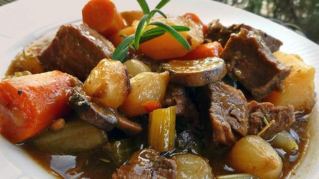
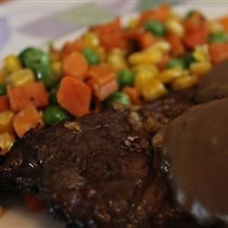

Beef Stew

Ingredients
Prep: 20 min
Cook: 2 hrs
Ready in 2 hrs 20 min
1. In a large pot or dutch oven, cook beef in oil over medium heat until brown. Dissolve bouillon in water and
pour into pot. Stir in rosemary, parsley and pepper. Bring to a boil, then reduce heat,
cover and simmer for an hour.
2. Stir potatoes, carrots, celery, and onion into the pot.
Dissolve cornstarch in 2 teaspoons of cold water and stir into stew.
Cover and simmer for 1 hour or more.
Juicy Steak

Ingredients :
Prep: 5 min
Cook: 15 min
Ready in 20 Min
1.Preheat your oven's broiler. Spread half of the butter ontop of the frozen steak.
Pour Worcestershire sauce over, and sprinkle liberally with tenderizer,
garlic, salt and pepper.
2.Place steak on a roasting pan. boil for 6 to 8 minutes, remove steak from the oven, and flip over.
Spread butter and season just like the other side. Retirn to the boiler, and continue cooking for
6 to 8 minutes, or to desired doneness.
Italian Spaghetti Sauce
with Meatballs

Ingredients :
Prep: 20 min
Cook: 2hrs
Ready in 2 hrs 20 min
1.In a large bowl, combine ground beef, bread crumbs, parsley, Parmesan cheese,
1/4 teaspoon of black pepper, garlic powder and beaten egg. Mixwell
and form into 12 balls. Store, covered, in the refridgerator until needed.
2.In a large saucepan over medium heat, saute onion and garlic in olive oil until onion is translucent.
Stir in tomatoes, salt, sugar and bay leaf. Cover, reduce heat to low, and simmer 90 minutes.
Stir in tomato paste, basil, 1/2 teaspoon pepper and meatballs and simmer for 30 minutes or more.
Back to top↑